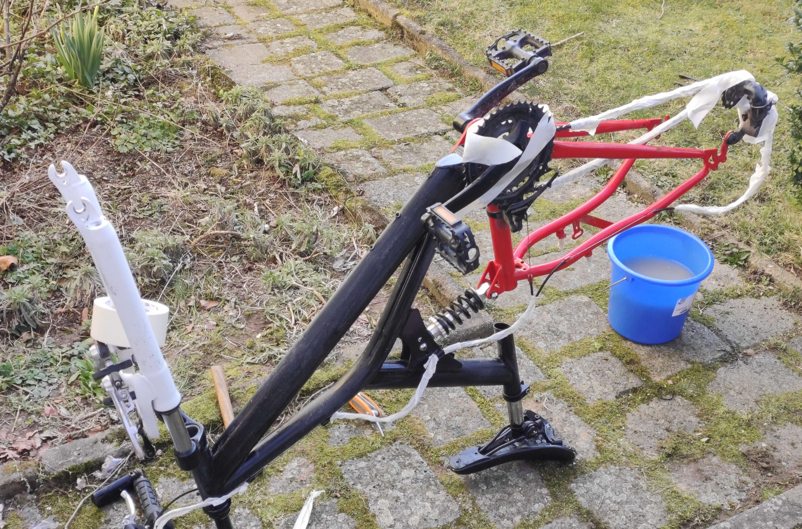

Do-it-yourself - Ein altes Fahrrad neu lackieren
Nachdem ich letztes Jahr mit meinem Mountainbike einen kleineren Unfall hatte, stand es diesen Winter in der Garage. Jetzt wo das Wetter wieder besser wird, steigt der Drang, das Rad wieder fahrtüchtig zu machen.
Aber mit dem Rad habe ich ein (Luxus-)Problem. Mir Gefällt die Lackierung nicht mehr. Also habe ich mich im Internet schlau gemacht. Keine zwei Tage später, stand ich im Baumarkt, um mir das benötigte Material zu besorgen.
Was du brauchst:
- Sandpapier (Verschiedene Stärken)
- Unterlage & Abdeckmaterial (Zeitungen & Gelbe Säcke tun es auch)
- Malerkrepp
- Lackspray
- Werkzeug
Ich weiß, einige Experten werden jetzt sagen, waaaas voll unprofessionell, da fehlt Klarlack und Grundierung, aber das Budget ist knapp und mein Grafitti-Kumpel meinte, das reicht aus. Das hier ist also die Low-Budget Ghetto-Variante.
Vorarbeiten
Wir haben bei gutem Wetter im Garten lackiert. Bevor es losgeht, sollte man möglichst alle Einzelteile vom Rahmen entfernen. Merkt euch unbedingt, was an welcher Stelle wie verbaut war und macht am besten Fotos. Der Rahmen wird komplett gesäubert. Hartnäckige Fett/Ölreste am Rahmen lassen sich erstaunlich gut mit Nagellackentferner beseitigen. Aufkleber am besten vom Rahmen entfernen. Die Kleberreste auch mit Nagellackentferner behandeln.
Alles was noch am Rahmen verbaut ist und keine Farbe abekommen soll wird mit Malerkrepp abgeklebt. Zeitungen und Gelbe Säcke tun hier gute Dienste.
Nun geht es ans Schleifen. Hier schwören einige darauf, den alten Lack komplett abzuschleifen. Mein Grafitti-Kumpel, sagte anschleifen reicht aus. Mit dem Sandpapier wird der Rahmen nun per Hand angeschliffen.
Lackieren
Danach beginnt ihr mit dem Lackieren. Sucht euch hierzu eine ruhige Stelle und deckt zumindest den Boden ab. Wir haben im Garten lackiert. Wie es sich innen verhält kann ich nicht sagen. Zieht euch am besten alte Klamotten und Handschuhe an. Das Lackieren an sich hat am wenigsten Zeit in Anspruch genommen. Achtet auf die Angaben zur Trockenzeit auf den Dosen. Mehrere Schichten Lack bieten sich für ein tolles Ergebnis an.
Nun steht der Rahmen bei uns im Keller und trocknet aus. Wartet unbedingt die Trockenzet ab, auch wenn es schwerfällt. In der Zeit könnt ihr euch, wie ich, neue Reifen kaufen, oder über andere Upgrades nachdenken.
Was noch so kommt
Das Projekt ist auf keinen Fall abgeschlossen: Es muss wieder alles montiert werden und meine neuen Reifen sind noch nicht geliefert. Also haltet die Ohren steif, für neue Updates von mir. Ein Fazit folgt auf jeden Fall.
Bilder
Zum Schluss, hier einige Bilder der Aktion:
Vorher 
{kind=link}
Nachher
{kind=link}
{kind=link}
{kind=link}